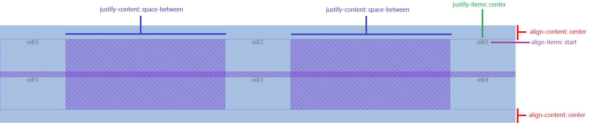
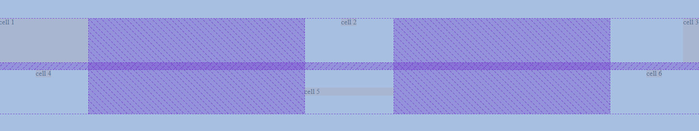

Basic Tables
We can use everything we have learned in Columns and Rows to create tables (also known as uniform grids). As you will see, for the first time, we are adding content to the cells of the grid, since we need to see how they react to that content.
Examples
1- We create a grid (with 3 columns and 2 rows). We give each column 200px wide and each row 100px height:
<div class="example-box example-box-r001 grid-row-container">
<div class="cell-1">cell 1</div>
<div class="cell-2">cell 2</div>
<div class="cell-3">cell 3</div>
<div class="cell-4">cell 4</div>
<div class="cell-5">cell 5</div>
<div class="cell-6">cell 6</div>
</div>
.grid-container {
display: grid;
grid-template-columns: repeat(3, 200px);
grid-template-rows: 100px;
grid-auto-rows: 100px;
min-height: 300px;
}
You can see that we are combining grid-template-rows with grid-auto-rows for the rows. We normally will know how many columns we will have, but knowing how many rows forehand will heavily depend on what we are creating. Curiously enough, you can remove grid-template-rows from the formula, and stay ONLY with grid-auto-rows, and it will work perfectly. After all, the first row STILL is an auto-row:
.grid-container {
display: grid;
grid-template-columns: repeat(3, 200px);
grid-auto-rows: 100px;
min-height: 300px;
}
NOTE: We need the grid-container to be a bit taller than the elements to illustrate vertical alignment later in this chapter. That's why we have the min-height property in place. As always, if we dont include it, the grid-container would be as height as its content.
Adding space between cells with the gap property
You can use the gap property to add space between cells. If only one value is used, the space will apply herizontally and vertically. If two values are used, the first one determines the space between rows, while the second one will determine the space between columns. No space is added between the elements and the 'limits' of the grid:
.grid-container {
display: grid;
grid-template-columns: repeat(3, 200px);
grid-auto-rows: 100px;
gap: 15px 30px;
min-height: 300px;
}
If you need to add space to only one of the sides (rows or columns) or if you want to do it separately, you can use the two different properties: row-gap and column-gap:
.grid-container {
display: grid;
grid-template-columns: repeat(3, 200px);
grid-auto-rows: 100px;
row-gap: 15px;
column-gap: 30px;
min-height: 300px;
}
It's way more common, however, adding the same space to both measurements (the change in the colors is intended):
.grid-container {
display: grid;
grid-template-columns: repeat(3, 200px);
grid-auto-rows: 100px;
gap: 1rem;
min-height: 300px;
}
Grid Alignments
When it comes to alignment, we need to understand that CSS Grid has two very different levels:
- Grid-level alignments, handled basically with the justify-content and align-content properties. These ones align CELLS RELATIVE TO THE GRID.
- Item-level alignments, handled basically with the justify-items, align-items, justify-self and align-self properties. These ones align CONTENT RELATIVE TO A CELL.
Grid-level Alignments
For BOTH justify-content and align-content, we will have the following values:
- start
- center
- end
- left
- right
- space-between
- space-around
- space-evenly
- stretch
Think about them as a 2-way flexbox (that is basically what a grid is). In the following example, we create a Grid that has its items horizontally spread and vertically centered:
.grid-container {
display: grid;
grid-template-columns: repeat(3, 200px);
grid-auto-rows: 100px;
gap: 1rem;
justify-content: space-between;
align-content: center;
min-height: 300px;
}
The centering part is possible because the grid-conatainer is actually taller than the sum of the rows' heights (remember it has min-height: 300px). Depending on the different relationships between the grid-container and the rows (in terms of heights), we can end up having these vertical alignments or not.
You might have notice also that both justify-content and align-content add a new value that flexbox doesnt have: space-evenly. This value works like a middle-case between space-between and space-around, giving EXACTLY the same space between the cells of the grid relative to each other and also relative to the edges of the grid-container.
Now, as we already said, justify-content and align-content are NOT the only alignment options in Grid. We also have the items-based alignment properties: justify-items, justify-self, align-items and align-self. All of these handle THE CONTENT INSIDE ITEMS, and not the cells inside the grid.
Item-level Alignments
For the four properties listed above, we will have the following values:
- stretch
- start
- center
- end
- right
Where stretch is the default one. Let's change that. We will add now justify-items and align-items to our previous example. The idea is the horizontally center the content of each cell and align it to the top:
.grid-container {
display: grid;
grid-template-columns: repeat(3, 200px);
grid-auto-rows: 100px;
gap: 1rem;
justify-content: space-between;
align-content: center;
justify-items: center;
align-items: start;
min-height: 300px;
}
It might look weird, but it is actually the intended behavior. In order to understand that, let's check the following image, that shows the grid distribution, something all modern browsers have in their dev tools:
Now we can clearly see the impact of every property applied to the grid. We can also target specific cells and change their alignments with justify-self and align-self:
<div class="example-box example-box-t006 grid-table">
<div class="cell cell-1">cell 1</div>
<div class="cell">cell 2</div>
<div class="cell cell-3">cell 3</div>
<div class="cell">cell 4</div>
<div class="cell cell-5">cell 5</div>
<div class="cell">cell 6</div>
</div>
.grid-container {
display: grid;
grid-template-columns: repeat(3, 200px);
grid-auto-rows: 100px;
gap: 1rem;
justify-content: space-between;
align-content: center;
justify-items: center;
align-items: start;
min-height: 300px;
}
.grid-container .cell-1 {
justify-self: stretch;
align-self: stretch;
}
.grid-container .cell-3 {
justify-self: end;
align-self: stretch;
}
.grid-container .cell-5 {
justify-self: stretch;
align-self: center;
}
Once again, we can check the grid distribution to confirm that everything is accurate:
These results might appean like we are just sending random values into the grid, but the thruth is that they are a crucial part of creating beautiful and powerfull grid layouts, as we will see later.
Finally, because it is important for the next point, we should remember AGAIN that the default property for the four item-level aligment properties is strecth.
Row Heights
...:
This example concludes the basic rows layouts of CSS Grid. It looks pretty slim compared against the big "Columns" chapter, but manu of the basics were covered in that "Columns" chapter, and the rest easy properties will be seen in the next chapter, Next: Grid Tables.